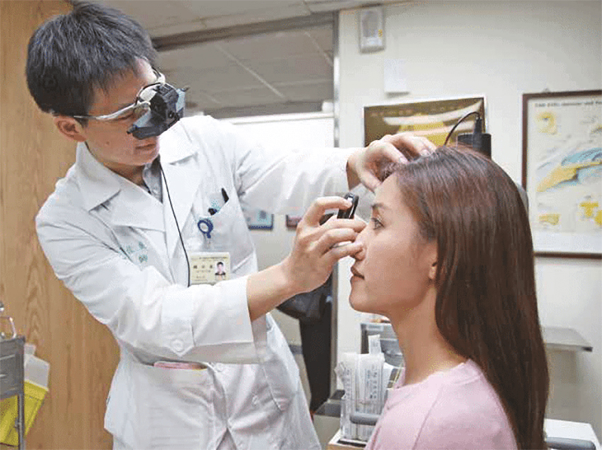

去年1 月第一次帶快 4歲的兒子去雙和醫院眼科之後，到今年已經回診過7次，倒不是孩子眼睛有什麼問題，只是做定期追蹤，以免太久沒檢查，眼睛有問題時無法及時補救。
每次回診我必定會記錄看診流程，後面幾次也開始記錄醫院使用的檢測機型型號，只是都用手機記錄看診狀況，看起來非常的欠揍，因為很像沒在聽醫護人員說話只顧著看手機。
幾次回診下來，有一些心得可以分享，以下分成三部分； 1.帶孩子去醫院看眼科時可以準備的物品 2.這幾次看診到底都做了哪些檢查3.護眼的方法。
【帶孩子去醫院看眼科時可以準備的物品】
為了伺候小少爺，眼罩、無線耳機、小毯子或外套是我必帶的三樣物品。眼罩的作用是點散瞳劑後，讓孩子眼睛可以乖乖閉上的工具，因為點散瞳劑後眼睛需要閉上才會加速瞳孔放大，若放大的程度不夠，還需要再補藥水，時間拉得越長，孩子就越躁動。常用的眼罩有底下兩種；
1.澳洲Slip真絲眼罩。這其實是我的眼罩，因此頭圍對孩子來說太大，但因為不是睡覺的時候戴，不會跟床摩擦而使眼罩移位，觸感很滑，缺點是價格較貴。
2.英國Panda熊貓竹纖維眼罩。雖然是兒童用眼罩，頭圍可以調整，價格比Slip便宜，但是很不耐用。
從圖中可以看到鬆緊帶跟眼罩連結處快不行了，這眼罩才買7個月左右，也沒有每天使用。另外眼罩推薦買黑色的，遮光性最好，最先買的白色熊貓眼罩已經收起來了。
戴上眼罩後，孩子一定會很無聊，無聊就會開始作妖，為了避免這種狀況，耳機就派上用場了。耳機我就沒什麼好推薦的，直接給孩子我在用的airpods，耳機音量問題也不用擔心，我跟孩子一人戴一邊，音量我來控制；順便推薦Podcast FUN星球放故事頻道，大部份孩子應該都會喜歡。最後一項是小毯子或外套，因為醫院冷氣都開蠻強的，趕快蓋到小孩身上以免囉哩八縮的喊冷。
【就診時做過的檢查】
| 1. | 驗光。我都叫看房子，就是往裡看會看到風景的機器，大家應該都有經驗。雙和醫院使用的機型為kr8900。 |
| 2. | 視神經掃描機器。 這個檢查對我兒來說有點硬，因為要在避免眼球運動跟眨眼的狀況下，盯著機器中的藍點看，這個檢查搞了很久，醫護人員測到有點不爽 XD雙和醫院使用的品牌為 Optovue 。 |
| 3. | 黑白紙卡看形狀。 |
| 4. | 立體視覺檢查。戴紅藍眼鏡判讀紙卡上的立體形狀(菱/方/圓/三角)，立體感測試可觀察到是否有單眼弱視或斜視的狀況。 |
| 5. | 角膜地圖儀。雙和醫院使用的品牌為oculus KERATOGRAPH。 |
| 6. | 眼壓計。檢查是否有青光眼，雙和醫院使用的品牌為at900。 |
| 7. | 眼底鏡。觀察視神經，檢查方式類似下圖，這就看醫生的功力了。 |
|  |
以上檢查並不是每次回診都會做，而是醫生根據每次狀況不同，安排下次回診需要檢查的項目有哪些。
【護眼方法】
我比較關注的是散光與近視問題，因此底下只以這兩種狀況分享我的心得： (1)散光：角膜弧度引起的，跟天生生理條件有關，揉眼睛會加深散光度數。我兒有一度因為過敏加上洗澡時喜歡玩水，水跑到眼睛，以上狀況都會揉眼睛，導致散光一度飆到300，後來調整生活習慣，比如帶去看中醫治療過敏，洗澡時戴髮箍，快一個月後散光有下降了。 (2)近視；有鑑於兒子的遠視儲備量從去年2021年初看診的150度，到現在過了快兩年，左邊遠視剩75度 右邊遠視125度，為了讓孩子的遠視儲備量可以維持的久一點，除了不讓孩子一直操作近距離活動，比如畫畫。也一直都不敢買樂高，孩子現在快6歲還是在玩duplo，下圖是duplo跟一般樂高的大小比較，樂高的確比較耗眼力。
另外現在觀念已經改變了，看電視不會造成近視，因為螢幕夠大距離夠遠，看電視的問題不是近視，是看多了小孩會變蠢，但我管不了那麼多，有時就是想放鬆，電視就開下去了啊。
最後要提的是，我在中醫社團查到了眼周撥筋的方法，睡前也會按孩子的風池穴，至於效果如何，明年1月回診見真章囉 。